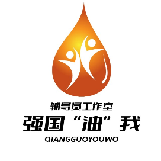

ONE
一引领
One Guidance
- 以国家号召为引领，服务党和国家重大战略布局
- 培养德才兼备、立志为中国特色社会主义事业奋斗终身的“能源栋梁、强国先锋”

石油与天然气工程学院
辅导员工作室
党建引领，立德树人
01 关于工作室
强国“油”我辅导员工作室由石油与天然气工程学院牵头建设， 以党建引领、立德树人为主线， 把党员教育从“完成规定动作”做成“学生愿意主动参与的事”。 工作室不做单点活动，而是把课程、实践、传播、评价串成一条线， 让经验沉淀为可复用的工作模式。
02 内容矩阵
04 荣誉与认可
05 团队
学科背景覆盖思想政治、工学、经济学，专业互补、梯度合理。
荣获四川省第七届辅导员年度人物（提名）、校优秀共产党员、第二届教职工飞翔奖·良师益友奖（入围奖）。优秀事迹《以“爱”筑魂，以“芯”育人，编写学生成长“梦想书”》入编教育部“非凡十年·我的教育故事”。2024 年作为全省唯一高校代表主讲四川党建《党课星期天》，被四川省委组织部收录进《基层优秀党课报告》。
中国高等教育学会思想政治教育分会会员、四川省网络文化协会专家会员。获全国及四川省“优秀易班指导教师”，案例获全国“优秀易班共建案例”。
中国石油工程设计大赛“全国优秀指导教师”，连续 5 年获评“全国先进个人”，四川省第二十八届新进教师培训班“优秀班干部”。
中国石油工程设计大赛先进个人、创新创业工作先进个人、职业生涯发展大赛优秀指导老师、暑期社会实践优秀指导教师。
2021 年毕业于华中师范大学教育经济与管理专业。BCF 生涯规划师。研究方向：思想政治教育、职业生涯规划与就业指导、心理健康教育。
计算机与软件学院研究生辅导员。热爱辅导员工作，把“为党育人”放在首要位置：辅学生成长、导学生方向、员学生梦想。
获校“高校网络教育优秀作品征集大赛”一等奖、职业发展与就业指导优秀案例二等奖；校职业规划大赛优秀指导教师、新闻舆论工作先进个人。